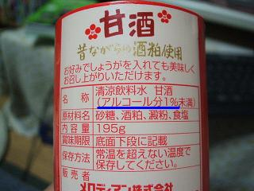
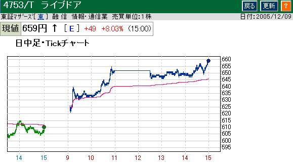

日々、想ふ
〜過去感じたことがつれづれと〜
（できるだけ最大化してお読みください）
日々、想ふ
１。１２/１５
バブルってはじけるからバブルって言うんですね、タケユキです。
俺は実家からの仕送りは郵貯に入れられてます。
下ろすときは郵便局のＡＴＭから下ろすんだけど
郵便局のＡＴＭっていうのは銀行のそれと違い
ちょっと古臭い感じがします、画面とかボタンとか。
軽く押すくらいじゃ反応しないとかでたまにイラっと来たり。
俺は生活してくお金がなくなる度に１万円ずつ下ろす人なんで
今日もいつものごとく暗証番号を入力して
さぁ１万円下ろそうとチャッチャと"１""万""円"と押して"確認"ボタンへ。
ちゃんと"１""万""円"とボタンを押したつもりが
なぜか"万"のボタンだけうまく押せてなかったらしく
画面には"１円"の文字。
それに気づいた時にはもう確認ボタンを押した後で、
「どうぞお受け取りください」の
抑揚のないメッセージととともに開いたシャッターの向こうには１円玉１枚、
その場に立ち尽くす２０過ぎの男、後ろに並んで待つお客さん。
なんでお金下ろすのにこんな微妙に恥ずかしい思いをせねばならんか。
１円だけ下ろす客なんか考えてもおらんじゃろ。
１円だけ下ろそうとしたら警告出すようなシステムにならんかいな、
どこかの証券会社と違って警告出ても無視しないから。
今日の偶然；飲んでた甘酒も"１"。

度胸が足りないんで。１２/１４
これからの予定を見てみたらバイトと飲みで
帰省までの日が全部埋まってる事実が発覚。
ほとんどバイトなんだけど、タケユキです。
やっぱりね、三日連続高騰はあやしかったんですよ、
そろそろいったん一息つくとこだったのは分かってるんです。
でもあの値動きは俺みたいなヘタレにはいじめだと思いませんか。
というわけでライブドア株今日の上昇は雀の涙。
途中鬼のような株価の急落。
タケユキ、その値動きを見てうろたえ株を売る。
５分後、再度上昇。
まぁ利益は減ったけど儲けが出てることは間違いないから
自分をなぐさめていこうと思う。
しかしザラ場(取引が行われてる間)中に株価ボードを見てると
ちょっとした値崩れで狼狽していまい持ち株を売ってしまうので
明日一日は気絶でもして株価から離れてみよう。
今日の晩ご飯：一風堂ラーメン。
それはちょっと強引。１２/１３
俺の中のバブルはまだ続いています、タケユキです。
火曜は毎週レポート提出がある授業、
たいていが授業の始めにレポートを提出するんだけど
今回は配布された授業プリントに
「宿題のレポートは帰りの時に提出してください」
って書いてあった。
あぁ今回は授業の最後にレポート集めるのかって思ってたら、
授業始まって５分後、横にいた友達が一言、
「よし、俺はもう帰るからレポート出してくるわ」
おいおい。
今日の損益：＋３１００円
浮き足立つ。１２/１２
なにかと話題になってるジェイコム株、14日から取引再開みたいですね。
気になる誤発注分の株は株の受け渡しの代わりに
１株あたり９１万円２０００円での現金での強制決済に踏み切るそうで。
持ってた人がうらやましい、タケユキです。
ここ最近の株価はどれも上昇傾向にあって、
うれしいんだけど、ちょっと冷静になってくれ自分、というか
そんな気持ちもあり難しいところです。
さて、今ホールド中のライブドア株なんだけど、
今日の取引を終えてからの株価は、
っしゃあああああああ！！！
もう冷静とか関係ない！
まだまだいける！目指せ８００円台！！
たぶんバブルはじける前の人の気持ちってこんなんだったんだと思った。
今日の取引：しかし売り時に迷う。
あれま。１２/１０・１１
出かけて帰ってきた、
それから寝て起きたらなぜか日曜午後三時の不思議、タケユキでした。
今日の朝ごはん：寝る前に食った。
今月は日経平均強い。１２/９
昨日はみずほ証券がエラいミス起こして
数百億規模の損失になったみたいですね、
その話題で気になったんだけど
ミスの大元は１株を６２万円で売るっていう注文を間違えて
１円で６２万株で売るっていう注文にしてしまったっていう話。
それ事態は事実なんだろうけど周りの人に実際に１円で株が売買されたと
思ってる人が多かったので補足。
株式市場にはいろいろルールがあって
その中には市場のパニックを抑えるために
一日に何円以上は株価は変動しないように値幅に制限をかけています。
これは株の値段によって何円とかってあるんだけど
たとえば株価が５００円以上１０００円未満のライブドア株の値幅制限は１００円で
１日で株価がいくら暴落しても−１００円まで、
いくら暴騰しても＋１００円まででしか上がらないようになっています。
前者の値になることをストップ安、後者をストップ高とか言います。
当のジェイコム株の始まり値は６７万２０００円から始まり、
５０万以上１００万未満の株価の値幅制限は１０万円だから、
株を１円で売り注文(指値といいます)を出したとしても
実際には売買が成立した時の取引値っていうのは
１円ではなくて５７万２０００円なんですよ。
それでみずほ証券がなんでそんなに損失かっていうと
自分が持ってない株を売っちゃったもんだから
手元にその株を手に入れないといけない＆間違えて売った株買い戻せって
いうことで大量に買い注文を出しました。
それで株価が暴騰、ストップ高の７７万２０００円へ。
この間わずか１５分ほどらしい。
単純に考えて他人にわたった株一株あたり２０万円の損失。
それで売りに出した株数が６０万株強。
この中で実際に売れてしまった株や、その他いろいろの経費など、
これらが積もり積もって数百億の損失だっていう話なんですよ。
だから１円で売ったわけじゃないのでその辺覚えとくと
経済に強い人だと思われます、タケユキです。
というわけで今日は株の話。
俺は今年の夏の初めくらいから株を始めたんだけど
いろいろな出費があったりで最近はやってませんでした。
それで最近になってまた少し資金に余裕が出てきたので再開することに。
今回のターゲットはライブドア。
単元株が１株で買いやすい上に長いスパンで見てみると
確実に株価は上がってる。
有名になってから(テレビ局の騒動の今年の２月くらいから)
今までで株価は２月の３倍近くにまで。
というわけで昨日ライブドア株を買ってみた。
今日の株価の推移状況は、

うおおおおおおお！！！！！
久しぶりに興奮した。
やっと俺の時代かと。
っていう話を何人かにしたらほぼ例外なく
「じゃあ飯おごってくれ」
まぁ落ち着け、おまえら。
今日のバイク：無事完治。
寒いし。１２/８
バイト代わってくれって言われて代わりました、
というわけで夕方梅田へ。
寒すぎて60km以上出す気になれませんでした、
そろそろ走り納めの時期ですかね、タケユキです。
そんなわけで急遽バイトだったんだけど
めちゃくちゃ暇で２１時にはお店を閉める準備、
楽やったけど何しにいったんだか、みたいな。
今日の一日：腹減った。
新たにお店発見。１２/７
そういえば暖房つけるようになりました、タケユキです。
今日は友達と東通りで飲みました。
東通りで飲もうとするとお店が多すぎてよく迷う、
別にうまいもん食おうっていう目的だったわけじゃないから
ドリンク半額っていうビラ配ってたお店へ。
入ってみたら店員さんというよりお客さんみたいな人に連れられて二階席へ。
なんでお客さんに案内されてんだ？と思ってたけど
すれ違う人何人かにも「いらっしゃいませ」と言われて気付く、
あ、このお店って店員さん私服なんだ、と。
変わったお店もあるもんだと話しながら食って飲んでました。
あ、私服だったからってそういうお姉さんがいるようなお店じゃないですよ。
今日の晩ご飯：そこは韓国料理のお店だった。
ほんとおっしゃる通り。１２/６
そういえば今日はうちのお姉の誕生でした、
授業中に思い出して「あ、おめでとう」ってメールを送ったら
「あ、ありがとう」っていう返事だけが返ってきた、
冷めた関係ってやつですかね、タケユキです。
先週のバイトでの出来事、結婚式の二次会会場にて。
その日の結婚式の新郎新婦さんは
どこかのお祭りの組に属しているらしく(だんじりとかたぶんそういうやつ)
お客さんもそういう人達が多かった。
そういう人達っていうのはよく言えばノリのいい人達、
悪く言えばマナー最悪、スタッフに対する態度最悪な人達。
幹事の男の人が先頭切って飲みまくり、
案の定ビールのピッチャーは乱れ飛び、
ワインは浴びるように飲むかと思いきやほんとに浴びてた。
俗に言う"わや"な状態。
しかし幹事の中にも冷静な人(女の人)もいてたりして
会の進行のことで男の幹事と女の幹事の人が揉めてた。
てか幹事同士がもめるなんて今まで見たことないんだけど。
「ねえもう時間やからそろそろ締めんと」
「アホか、今日は祭りや！まだ終わらんでえ！」
「アホはお前や！今日は結婚式や！！」
いや、まったく。
今日の晩ご飯：すべて９９均の食材。
始まる前から見えてる勝負。１２/５
そういえば今年もあと１ヶ月切ったんですよね、タケユキです。
ゲームのひとつで昔古今東西っていうゲームがあります。
なにかしらテーマを決めて
それに関係するものを交互に言い合うっていうゲームです。
テーマを「野菜」って決めたらハイハイ♪キャベツ！ハイハイ♪ピーマン！みたいな。
このゲームを２人でやってる人を見た。
その時のテーマは「信号の色」
はいはい♪ 男Ａ「赤！」
はいはい♪ 男B「黄！」
はいはい♪ 男Ａ「青！」
はいはい♪ 男B「・・・」
終了。
楽しいか、これ。
今日の咳：だいぶおさまりました。
実は昨日今日で２１時間労働。１２/４
iPodって手袋した手だとうまく操作できないみたいですね、
あのiPodのトレードマークみたいなグルグル操作するやつが
手袋したままだと反応しませんでした、タケユキです。
昨日の日記には書かなかったんだけども実は昨日は２つ目の給料日。
というわけで今多少リッチマン。
普段は立ち読みしかしないモーニングをバイト帰りに買ってみた。
大学生になってからはジャンプすらも
立ち読みで済ませるようになってたことを考えると
これはかなり思い切った行動。
とか思いながら意気揚々に帰り道を帰ってた俺、
確かに財布は裕福かもしれんが心が貧しい。
今日の日記：誰かデートして。
俺んとこ来ないか。１２/３
目から下の顔半分をマフラーで隠し、
シールド付きのヘルメットを装着、
パッと見強盗そのものなんですけど。
そのくらい今の季節バイクは寒いです、タケユキです。
今日バイト先で見たお客さんで氣志團もびっくりの
リーゼントなお客さんがいた(その人が結婚式二次会の新郎さん)。
もう２０代後半っぽかったけどこういう人もいてるんだと思った。
その宴会にはその人の親父さんもいて
新郎さんが親父さんにあいさつするときに
「昔はバイクばっか乗って言うことも聞かず・・」
あんた見たまんますぎやしないかい？
今日のバイト１１時間労働。
（件名なし）。１２/２
チョコが食べたい、タケユキです。
とりあえず晩ご飯にチョコを食うわけにはいかんので
夜にでもチョコを求めて放浪してみようと思います。
最近日記が手抜き手抜きと言われることが多いけど
毎日を必死に生きているからです。
必死すぎてまともな更新をする余裕がないというか。
大学三年というのは誰にとってもこれからの人生を
決めるうえでの大きな岐路であるのは確か。
今までの学生生活なんかは人生という枠で見れば
確かに重要な部分ではあるけども、大部分ではないわけで。
仕事を含めた社会人生活のほうが大きな比重を持っているはず。
そうやっていろいろそんなこととかを
全く考えることない自分がここにいるわけだけども。
特に考えずに生きてるような。
そんなことよりはよ風邪治らんかいな。
今日の晩ご飯：寿司くいねえ。
師走っていうだけにさっと過ぎてくものだろか。１２/１
先週バイト先に忘れてきた壬生義士伝の上巻を持って帰って読書中、
さすがに下巻から先に読み始めるわけにはいかんから
今週学校で読書ができんかったので
今から今週分読み始めてみようかと、タケユキです。
さて早いもので今日から１２月です、
年内の演習もプログラムが完成し、
実験もあとは動作確認を残すのみと言った感じで
とりあえず年内にやるべき大きな仕事は終わった感があるので
別に就職するわけじゃないけど
ちょっとどこかの就職説明会でも行ってみようかいな。
今日のバイト：なんねピークだけ働いて３時間かい。